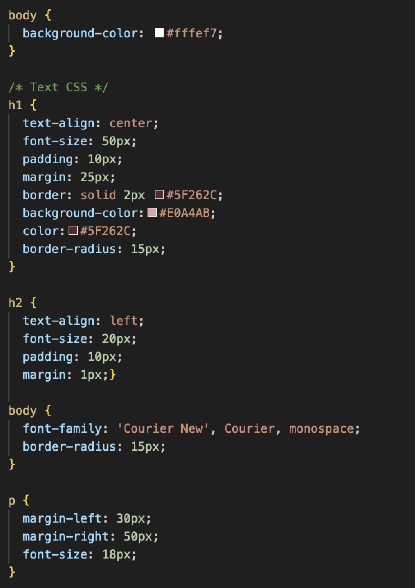
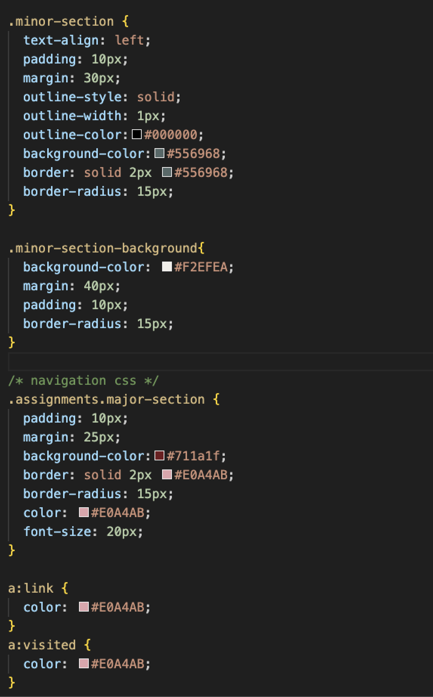

Lab 14: Debugging Tools & Strategies
Challenge
This Lab required us to look at our previous labs and inspect them for any bugs or errors. Mainly utilizing the console feature in Chrome or going back to look at elements that are correct coding wise but may not be operating in the way that we want.
Problems
I had a bit of problem solving my layout problems with Lab10 but ended up asking Ilia for assistance and going into Wes' code for Lab10 to see what irregularities I had in my own code.
Debugging
*For this lab I worked in lab 10 with some CSS editing. I had a hard time getting the fake texting to align properly and had to ask Ilia for help and look at Wes' site. Here are the Before (Top row) and After (Bottom row) photos.
And here is the updated CSS for the entire site. Much more organized!
 
Results
*I mostly worked in Lab10 but also worked to clean up my CSS coding so I no longer had repeat coding going on from lab to lab.